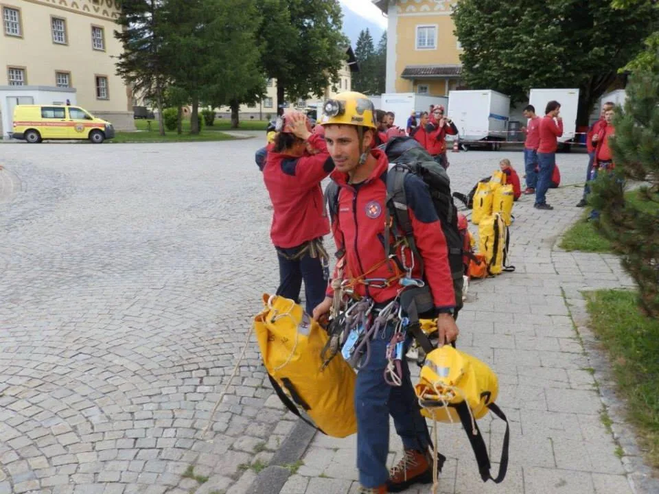

Interview: Marko Rakovac
Tsvetan Kosturkov za web bugarskog speleološkog kluba "Под Ръбъ" (Ispod ruba) napravio je interview sa tajnikom SO PDS Velebit Markom Rakovcem

Recite nam nešto o sebi i svom speleološkom iskustvu.
Rođen sam 1989. godine i završio sam gimnaziju i Pravni fakultet. Iako sam iz Poreča (turistički grad na sjevernoj obali Jadranskog mora), puno sam skloniji planinama nego moru, a u tome u prilog govori činjenica da prije sam proskijao nego što sam proplivao. Član sam PDS Velebit od 2010. godine i otad se aktivno bavim speleologijom.
Kako ste se počeli baviti speleologijom odnosno zašto se još uvijek bavite tom aktivnošću?
Na poticaj starijeg brata pročitao sam knjigu Put Nejc Zaplotnika (slovenski alpinist i himalajac) koja me je inspirirala da „izađem“ u prirodu. Zapravo, htio sam se baviti alpinizmom, ali s obzirom na to da je kvota za alpinistički tečaj bila popunjena, na nagovor prijatelja upisao sam se na speleološki tečaj. Zapravo nisam imao pojma o speleologiji, tada mi je jedino važno bilo položiti sve ispite na faksu i upoznati kakvo društvo za provoditi vikende. Speleologijom se bavim od početka studiranja i posljednjih desetak godina sam prilično aktivan. Razlozi tome su mnogobrojni. Izdvojio bih činjenicu da sam u Društvu (Speleološki odsjek PDS Velebit) pronašao drugu obitelj koja mi je uvijek pružala podršku, zabavu i u konačnici mnoge prilike koje su me oblikovale kao osobu. S obzirom na to da sam kao mlada osoba preuzimao odgovornosti u Društvu (bio sam pročelnik odsjeka (predsjednik), voditelj ekspedicija i instruktor na školama, imao sam osjećaj da u životu mogu nešto ostvariti svojim zalaganjem te sam počeo više poštivati sebe i druge. Preuzimanjem odgovornosti stječemo slobodu a ona nas čini boljim osobama. Sve to na neki način želim vratiti društvu u kojem djelujem.
Trenutno ste pročelnik Komisije za speleospašavanje HGSS-a. Možete li nam reći nešto o strukturi speleo spašavanja u Hrvatskoj) npr. prevenciji, značajnim akcijama spašavanja, obukama, vježbama i projektima)?
Hrvatska gorska služba spašavanja (HGSS) je neprofitna, nestranačka i dobrovoljna udruga koja se bavi spašavanjem iz neurbanih područja koja uključuju i speleološke objekte, odnosno mi smo jedina organizacija koja je relevantna da, na temelju Zakona o HGSS-u, se bavi tim aspektom spašavanja. HGSS ima oko 1000 članova od kojih je tečaj speleospašavanja, koji predstavlja dio obuke u HGSS-u, završilo oko 450 članova dok je stotinjak članova usko zainteresirano za spašavanje iz speleoloških objekata odnosno aktivni su u radu Komisije za speleospašavanje. Osim osnovnog tečaja speleospašavanja, održavamo još 5 specijalističkih tečajeva koji su usko vezani za pojedina područja u speleospašavanju: zbrinjavanje unesrećenog, vođenje akcije speleospašavanje, vođenje speleospašavalačke ekipe, tečaj speleoronilačkog spašavanja i frakturiranja stijena (proširivanja uskih prolaza).
[caption id="attachment_2599" align="alignnone" width="960"] Akcija spašavanja unesrećenog speleologa u jami Riesending, Njemačka 2014.[/caption]Dakle, sve što je potrebno za pozitivan ishod u speleospašavanju. S druge strane, na godišnjoj razini organiziramo seminare o samospašavanju za speleološke udruge, na kojima ih učimo tehnikama samopomoći i ponašanja u slučaju akcije speleospašavanja. S obzirom na to da je većina članova Komisije aktivna u speleološkoj zajednici, na speleološkim skupovima prezentiramo svoj rad speleolozima i nastojimo biti otvoreni za dijalog i uključivanje speleologa u aktivnosti Komisije. Na godišnjoj razini organiziramo velike vježbe spašavanja iz kompleksnih i često istraživanih speleoloških objekata kako bi se upoznali sa speleološkim objektom, pripremili sidrišta za spašavanje i eventualno popravili linije za napredovanje. Komisija je aktivna članica ECRA-e (European cave rescue commission) i aktivno koristimo tu platformu za izmjenu znanja i iskustva u speleospašavanju. Jedan od ciljeva nam je stvoriti europski speleospašavalački modul kojeg bi koristili u međunarodnim speleospasilačkim akcijama. Također, razvijamo novi pristup tečaju za vođu speleospasilačke ekipe, koji kombinira talijanske i francuske tehnike izvlačenja, za kojeg se nadamo da ćemo dobiti uskoro gotov proizvod kojeg ćemo održavati na međunarodnoj razini i među članicama ECRA-e. Cilj tog tečaja je imati malu, jaku i sposobnu ekipu spašavatelja s velikim stupnjem autonomije djelovanja na terenu.
Koje Vam je područje istraživanja ili koje su Vam špilje najinteresantnije? Podijelite s nama neke brojeve i saznanja (dubina, duljina, razina zahtjevnosti, kratka povijest, budući planovi).
U Hrvatskoj postoji nekoliko zanimljivih područja, od kojih sam najviše sudjelovao na istraživanjima sjevernog i južnog Velebita. Sjeverni Velebit ima najdublje objekte u Hrvatskoj (Lukina jama -1441m, Slovačka jama -1324 m, Jama Velebita -1024m). Istraživanja u tim jamama sam nerijetko provodio s bugarskim speleolozima, od kojih smo puno naučili i s kojima dan danas rado surađujemo, kako u speleološkim istraživanjima tako i kroz ECRA-u. Usudio bih se reći da su hrvatski i bugarski speleolozi slični po mentalitetu i zato se dobro razumiju. Jedan od ambicioznijih ciljeva u Hrvatskoj speleologiji je povezati velike jame Crnopca (Južni Velebit) u Crnopački speleološki sustav (tj. povezati jame: Kita Gaćešina-Draženova puhaljka-Muda Labudova-Oaza). To je cilj kojeg smo nadomak, a u nedavnoj istraživanju jame Oaza, došlo se na 22 m od Kite Gaćešine i 22 metra od Muda Labudovih. Blizu smo i nadamo se da je ljudska pogreška minimalizirana, kao i odmaci u magnetskoj deklinaciji. Iako se to ne može uvijek izbjeći, pogotovo kod dubokih, dugačkih i složenih speleoloških objekata. U posljednje vrijeme često razmišljam o Bosni i njenom neiskorištenom speleološkom potencijalu. Bosna, osim što je bogata kršom, vrlo je jeftina i pristupačna. Osim Bosne, u regiji su jako blizu Julijske Alpe, u koje često navraćam. Od alpskih planina, najradije istražujem na Kaninskom platou, kako s talijanske tako i sa slovenske strane, koji zagriženim speleolozima pruža prilike za istraživanje dubokih jama i povezivanja istih u velike jamske sustave. Sa Slovencima imamo jako dobre odnose i lijepo je kad se svaki put okupimo i odemo u jake speleološke akcije. Alpe su mi posebno drage zimi, kad često kombiniramo speleologiju sa skijaškim turama (pristup do speleološkog objekta). Najzahtjevnija duboka jama u kojoj sam bio je Led Zeppelin, ona morfološki predstavlja dugački i uski meandar do 700 m dubine, nakon kojeg se nastavljaju prekrasni prostrani kanali do 1000 m dubine. Tisućice koje bih izvodio na Kaninu su još Renejevo Brezno i Brezno Rumenega Maka (P4) u kojima sam više puta bio na istraživanjima. Volio bih još posjetiti sistem Črnelsko brezno i jamski sustav Mala Boka-BC4, jednu od najvećih traverzi na svijetu (uđeš na 2000 n.m.v. i izađeš u dolini na 600 n.m.v.). Što se tiče drugih interkontinentalno-speleoloških ekspedicija, volio bih posjetiti Iran, Kirgistan, Gruziju, Kinu i Tursku.
[caption id="attachment_2600" align="alignnone" width="2816"] Dio sudionika bugarsko-hrvatske ekspedicije Slovačka jama 2017. Foto: Marko Rakovac[/caption]Kako pristupate prema novim članovima speleo spasilačkog tima tijekom obuke (primjerice, koliko dugo traju tečajevi, na što se stavlja naglasak i sl.)?
Osnovni tečaj speleospašavanja traje 8 dana (podijeljenih u 3 vikenda), tako da između vikenda tečajci imaju vremena ponoviti tehnike koje se uče na tečaju. S obzirom na to da HGSS nije služba koja je isključivo sastavljena od speleologa već i članova mnogih drugih specijalnosti, prilikom dolaska na osnovni tečaj moraju zadovoljiti uvjete sigurnog kretanja po užetu i kondicijsku izdržljivost na užetu. Ukoliko to ne zadovolje, utoliko mogu pristupi tečaju iduće godine kad se bolje pripreme. U načelu, Komisija je otvorena za sve nove članove koji žele raditi na razvoju speleospašavanja, dok nove i kvalitetne kadrove promatramo i potičemo da se priključe našem timu. Svake godine održavamo tečaj s dvadesetak tečajaca, što doprinosi razvoju instruktorskog kadra, u što polažemo velike napore. Svaki instruktor mora imati položen tečaj za vođu ekipe speleospašavanja, te on kao instruktorski kandidat mora prvo demonstrirati tehnike uz motrenje iskusnijeg instruktora. Zato se uvijek unaprijed na instruktorskim seminarima dogovaramo tko će, što će i kako prezentirati na tečaju.
[caption id="attachment_2601" align="alignnone" width="1600"] Jamarski bivak na Kaninskom platou, foto: Marko Rakovac[/caption]Prema Vašem iskustvu s nesrećama u špiljama, možete li podijeliti s nama nešto što bi drugi speleolozi mogli naučiti iz Vašeg iskustva? Koji bi bio Vas savjet u slučaju takvih incidenata?
Mi speleolozi smo uvijek u zoni rizika, jer da nismo, u prvom redu ne bi se ukopčali na to uže i zavlačili se u podzemlje. U načelu, to treba biti prihvatljiva zona rizika, što znači da trebamo ići do svojih granica i onda još malo (tzv. guranje granica), kako bi napredovali u speleološkom smislu. To znači da trebamo izaći iz zone komfora, ali do mjere da nam ta „neugoda“ bude „ugoda“ i da uvijek imamo kontrolu nad situacijom. Osobno, pomoglo mi je što sam se bavim speleospašavanjem jer sam tako mogao lakše predvidjeti rizik kojeg bih prihvaćao i osobe koje su bile u mojem društvu (manje iskusne) bolje su se osjećale. Najveća (najčešća) objektivna opasnost za nas speleologe, osim vode (slapova i poplava) je padajuće kamenje. U tom smislu moramo uvijek biti spremni (i uvježbani) za skinuti kolegu speleologa s užeta za napredovanje i zbrinuti ga do dolaska pomoći. Ljudski život je najveća vrijednost i neodgovorno je upustiti se u speleološku avanturu bez uvježbanih tehnika i određenih mjera predostrožnosti. Često se žurimo olako misleći da ćemo sve obaviti na vrijeme i kod višednevnih istraživanja volimo zamijeniti „dan“ za „noć“. To ponekad nije dobro zbog ljudskog bioritma kojeg živimo u svakodnevnom životu a što utječe na učinkovitost istraživanja. Zaboravljamo da je najljepša speleologija ona u kojoj, osim dobre zabave, postoje opipljivi i kvalitetni rezultati istraživanja, s kojima se ponosi (i postaje zrelije) cijelo društvo/klub. Problem je u tome što su speleolozi prilično opuštena sorta ljudi i ne žure se pretjerano pobjeći iz bivka na istraživanje, pa čak do ručka (spavamo dugo, pijemo kavu i kuhamo doručak, obavljamo toaletu, zatim druga kava, spremanje opreme itd.). Predlažem da više vremena posvetimo promišljanju organizacije istraživanja kako bi smanjili akumulaciju praznog hoda i uštedili vrijeme, a da se zabavljamo i opuštamo kad obavimo sav posao koji smo naumili.
Što ste sve naučili kroz bavljenje speleologijom?
Speleološka aktivnost nas uči da trudom možemo mnogo toga postići, pogotovo u današnjem društvu potrošačkog mentaliteta gdje je većina mladih navikla da sve ostvare jednim klikom miša. Neprocjenjiv je osjećaj (i nagrada) kad dugotrajno proširuješ uski prolaz, iako su ti govorili da tamo nema ničega, i kad se nakon upornog rada trud isplati i otkriješ kanale kilometrima duge. Treba pustiti priče (u koje se svi lako emotivno zanesemo), rad je jedino važan u ovoj aktivnosti. Originalnost se usvaja kroz preuzimanje odgovornosti za sebe, druge i za okoliš. Zato potičem sve pojedince koji žele napredovati kao speleolozi: nemojte čekati druge da to učine za vas! Organizirajte istraživanje i napravite ono što vas je najviše strah (ili mislite da ne možete) – zabušite spit, nacrtajte speleološki objekt ili se prijavite na neku međunarodnu ekspediciju! Što više raznih iskustava doživite i ljudi upoznate, to ćete biti bolji u toj aktivnosti.
Sretno i sigurno jamarenje s puno novih metara!
Link na portal "Ispod ruba" (Под Ръбъ) [gallery ids="2599,2600,2601,2602,2603,2604,2605,2606" type="rectangular"]